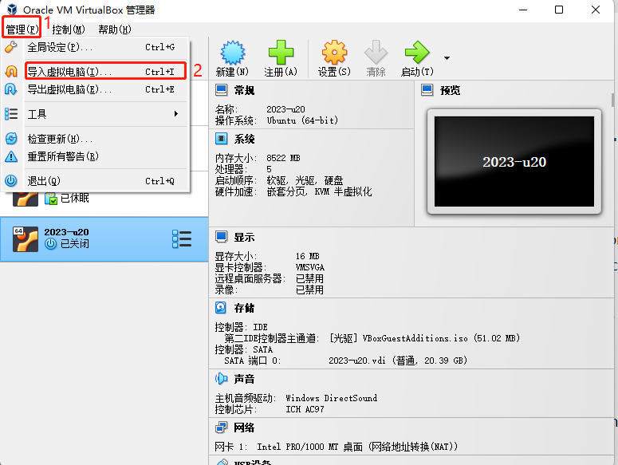
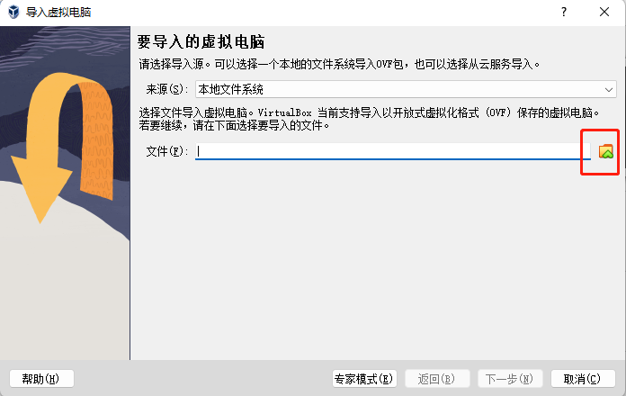
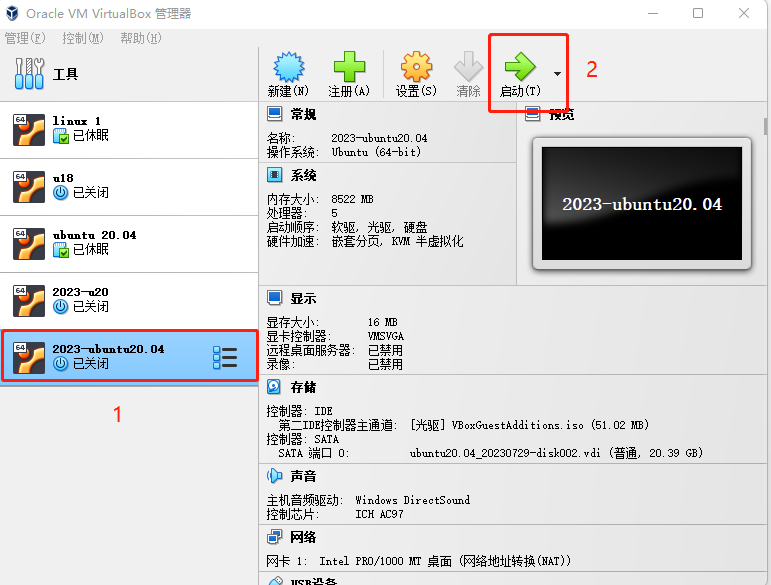
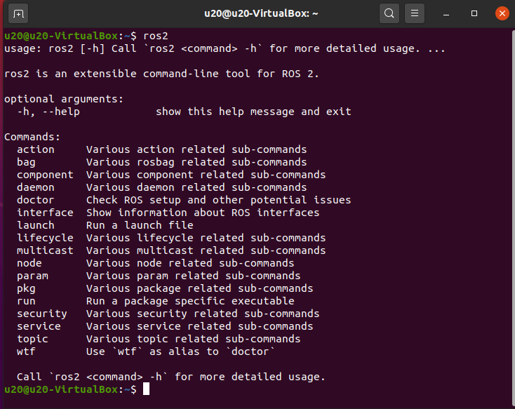
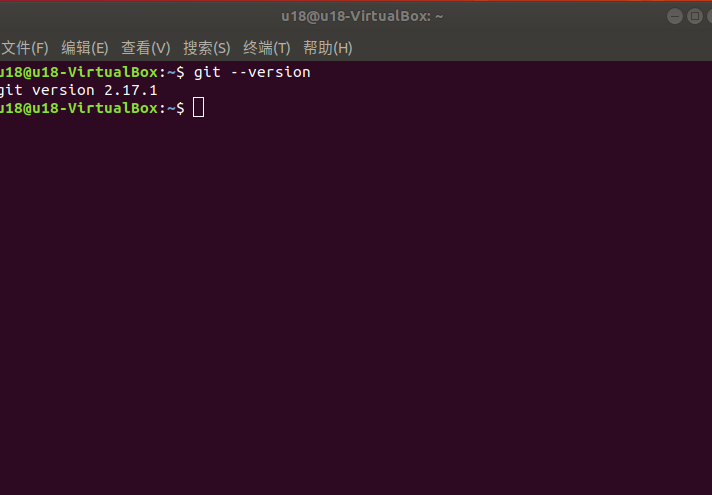

ROS2 环境搭建
本教程提供两种方式来搭建 Ubuntu20.04/22.04 + ROS1 开发环境：
- 方式一：导入虚拟机镜像（推荐） → 最快上手，内置完整环境
- 方式二：自定义安装环境 → 从零开始搭建，适合需要灵活定制的用户
方式一：导入虚拟机镜像
适用案例功能：使用ROS2或者MoveIt2
注意： 为了降低环境搭建难度，我们将给出 Linux系统镜像（Ubuntu 22.04）、Virtual Box安装包以及其扩展包。 接下来将教导大家如安装Virtual Box以及导入Linux系统镜像（默认密码为123）。 已内置环境： ROS2 humble + MoveIt2 + Git + pymycobot + mycobot_ros2
1 安装虚拟机
前往官方网站下载虚拟机 Virtual Box
VirtualBox 安装包：Windows hosts
VirtualBox 拓展包：VirtualBox 7.0.10 Oracle VM VirtualBox Extension Pack
VirtualBox 拓展包安装方式请参考：拓展包安装教程
当然，如果您已经拥有您的虚拟机，您可以跳过该步骤。
我们选择下载Virtual box，因为它是免费的。

2 下载Linux系统镜像
点击下载：Linux ubuntu22.04
3 导入Linux系统镜像
注意: 导入方式可参考ubuntu 20.04系统的导入方式
在Virtual Box界面中点击 管理 -> 导入虚拟电脑 -> 选择虚拟镜像 -> 选择安装路径并进行导入，如下安装即可。




等待镜像导入即可，如下图即为安装成功。

然后启动系统即可，默认密码为 123
4 更新pymycobot
为了能使用最新的机械臂驱动库，请打开终端执行下面命令更新：
pip3 install pymycobot --upgrade
5 更新mycobot_ros2
为了保证用户能及时使用最新的官方包，可以通过文件管理器进入/home/u22/catkin_ws/src文件夹，打开控制台终端（ 快捷键 Ctrl+Alt+T ) ，输入以下命令进行更新：
# 克隆github上的代码
cd ~/colcon_ws/src
# 删除原来的mycobot_ros2包
sudo rm -rf mycobot_ros2
# 针对 humble 分支
git clone -b humble --depth 1 https://github.com/elephantrobotics/mycobot_ros2.git
# 针对 foxy 分支
git clone -b foxy --depth 1 https://github.com/elephantrobotics/mycobot_ros2.git
# 针对 galactic 分支
git clone -b galactic --depth 1 https://github.com/elephantrobotics/mycobot_ros2.git
cd .. # 回到工作区
colcon build # 在工作区中构建代码
source install/setup.bash # 添加环境变量
为了减少编译时间，可以单独编译某个功能包，其中 package_name 是具体的功能包名称，请根据实际进行修改。
cd ~/colcon_ws
colcon build --packages-select package_name
source install/setup.bash
方式二：自定义安装环境
1 虚拟机安装
注意： 安装虚拟机系统时，请安装Ubuntu 20.04 版本的系统，安装方法与 ubuntu 18.04 一致。若使用moveIt2的功能，需要安装 Ubuntu 22.04 版本的系统。
在 Linux 中安装不同版本的 Ubuntu 系统，具体安装方法请参阅 ROS1 环境搭建 章节。
2 ROS2 安装
要构建基本的开发环境，您需要安装机器人操作系统 ROS2 和 git 版本管理器。下面将介绍安装方法和过程。
2.1 版本选择
ROS2 跟 ubuntu 有一一对应的关系，不同版本的 ubuntu 对应不同版本的 ROS2，参考网站见下：http://docs.ros.org/en/foxy/Releases.html
这里给出对应Ubuntu支持的 ROS2 版本:
| ROS2版本 | 发布日期 | 维护截止日期 | Ubuntu版本 |
|---|---|---|---|
| Foxy | 2020 年 6 月 5 日 | 2023 年 5 月 | Ubuntu 20.04(Focal Fossa) |
| Galactic | 2021 年 5 月 23 日 | 2022 年 11 月 | Ubuntu 20.04(Focal Fossa) |
| Humble | 2022 年 5 月 23 日 | 2027 年 5 月 | Ubuntu 22.04(Jammy Jellyfish) |
请根据自己安装的 Ubuntu 版本进行对应 ROS2 版本的安装，MoveIt2 仅支持 humble 版本。
如果版本不同，下载将会失败.在这里我们选择的系统为 Ubuntu 20.04 (推荐), 对应 ROS2 版本为 ROS2 Foxy
NOTE: 目前我们不提供 windows 安装 ROS2 的任何参考, 若有需要请参考 http://docs.ros.org/en/foxy/Installation/Alternatives/Windows-Development-Setup.html
2.2 开始安装
1 添加源
Ubuntu 本身的软件源列表中没有 ROS2 的软件源，所以需要先将 ROS2 软件源配置到软件列表仓库中，才能下载 ROS2 。打开一个控制台终端(快捷键Ctrl+Alt+T),输入如下指令：
- 官方源：
echo "deb [arch=$(dpkg --print-architecture) signed-by=/usr/share/keyrings/ros-archive-keyring.gpg] http://packages.ros.org/ros2/ubuntu $(source /etc/os-release && echo $UBUNTU_CODENAME) main" | sudo tee /etc/apt/sources.list.d/ros2.list > /dev/null
- 若下载速度缓慢，推荐就近选择一个镜像源替换上面的命令。例如，huawei cloud为：
echo "deb [arch=$(dpkg --print-architecture)] https://repo.huaweicloud.com/ros2/ubuntu/ $(lsb_release -cs) main" | sudo tee /etc/apt/sources.list.d/ros2.list > /dev/null
2 设置秘钥
配置公网秘钥,这一步是为了让系统确认我们的路径是安全的的，这样下载文件才没有问题，不然下载后会被立刻删掉：
sudo apt install curl gnupg2 -y
curl -s https://gitee.com/ohhuo/rosdistro/raw/master/ros.asc | sudo apt-key add -
3 安装
在加入了新的软件源后，需要更新软件源列表，打开一个控制台终端(快捷键Ctrl+Alt+T),输入如下指令：
sudo apt-get update
执行安装 ROS2，打开一个控制台终端(快捷键Ctrl+Alt+T),请按照自己的Ubuntu版本选择输入以下指令：
# Ubuntu 20.04 foxy版本
sudo apt install ros-foxy-desktop
# Ubuntu 20.04 galactic版本
sudo apt install ros-galactic-desktop
# Ubuntu 22.04 humble版本
sudo apt install ros-humble-desktop
安装过程耗时比较长，需要耐心等待。
安装完成后刷新环境变量：
source /opt/ros/foxy/setup.bash
2.3 设置 ros2 环境
为了避免每次关掉终端窗口后都需要重新生效 ROS2 功能路径，我们可以把路径配置到环境变量中，这样在每次打开新的终端时便可自动生效 ROS2 功能路径，在终端依次执行以下命令，打开一个控制台终端(快捷键Ctrl+Alt+T)执行以下命令：
# Ubuntu 20.04 foxy版本
# 将 ros 环境加入到当前控制台的环境变量
echo "source /opt/ros/foxy/setup.bash" >> ~/.bashrc
# Ubuntu 20.04 galactic版本
echo "source /opt/ros/galactic/setup.bash" >> ~/.bashrc
# Ubuntu 22.04 humble版本
echo "source /opt/ros/humble/setup.bash" >> ~/.bashrc
source ~/.bashrc
2.4 安装 ROS2 额外依赖项
在终端输入以下命令安装ROS2额外依赖项，打开一个控制台终端(快捷键Ctrl+Alt+T)：
sudo apt install python3-argcomplete -y
sudo apt install ros-foxy-xacro
sudo apt-get install python3-colcon-common-extensions
# Ubuntu 20.04 foxy版本
sudo apt install ros-foxy-joint-state-publisher-gui
# Ubuntu 20.04 galactic版本
sudo apt install ros-galactic-joint-state-publisher-gui
# Ubuntu 22.04 humble版本
sudo apt install ros-humble-joint-state-publisher-gui
sudo apt install ros-humble-xacro
2.5 验证安装
为了验证 ROS2 是否安装成功，打开一个控制台终端(快捷键Ctrl+Alt+T)，在终端执行以下命令：
ros2
当显示如下界面，则表示 ROS2 安装成功

3 MoveIt2 安装
注意： 这里仅提供 ubuntu 22.04系统的安装方式
MoveIt2 是 ros2 中一系列移动操作的功能包的组成，主要包含运动规划，碰撞检测，运动学，3D 感知，操作控制等功能。
3.1 更新软件源列表
打开一个控制台终端(快捷键Ctrl+Alt+T)，在终端窗口输入以下命令，以更新软件源列表：
sudo apt update
3.2 安装 MoveIt2
sudo apt-get install ros-humble-moveit
sudo apt install ros-humble-ros2-control ros-humble-ros2-controllers ros-humble-joint-trajectory-controller ros-humble-joint-state-broadcaster
4 git 安装
4.1 更新软件源清单
打开一个控制台终端(快捷键Ctrl+Alt+T)，在终端窗口输入以下命令，以更新软件源列表：
sudo apt-get update
4.2 安装 git
打开一个控制台终端(快捷键Ctrl+Alt+T)，在终端窗口输入以下命令，执行 git 的安装：
sudo apt-get install git
4.3 验证安装
读取 git 版本，打开一个控制台终端(快捷键Ctrl+Alt+T)，在终端窗口输入以下命令：
git --version
在终端中可以显示 git 版本号，如下，即为安装成功。

5 mycobot_ros2 安装
mycobot_ros2 是 ElephantRobotics 推出的，适配旗下桌面型六轴机械臂 mycobot系列 的ROS2 包。
项目地址：http://github.com/elephantrobotics/mycobot_ros2
5.1 前提
在安装包之前，请保证拥有 ros2 工作空间。
这里我们给出创建工作空间的样例命令，打开一个控制台终端(快捷键Ctrl+Alt+T)，在命令行输入以下命令：
mkdir -p ~/colcon_ws/src # 创建文件夹
添加工作空间的环境：
官方默认的 ROS2 工作空间是 colcon_ws。
echo "source ~/colcon_ws/install/setup.bash" >> ~/.bashrc
source ~/.bashrc
5.2 安装
NOTE：
- 本包依赖于ROS2和MoveIt2，使用前确保以成功安装ROS2和MoveIt2。
- 本包与真实机械臂的交互依赖于PythonApi -
pymycobot - Api项目地为：https://github.com/elephantrobotics/pymycobot
快速安装：
pip install pymycobot --upgrade执行pip install pymycobot --upgrade命令时，若出现如下图错误提示：

根据提示输入以下命令安装pip
sudo apt install python3-pippip安装完成后，终端再次执行
pip install pymycobot --upgrade安装方式依赖于Git，请确保电脑中已安装Git。
请根据不同的ROS2版本选择下载不同的分支代码：
Ubuntu 20.04 / ROS2 Foxy - branch
foxyUbuntu 20.04 / ROS2 Galactic - branch
galacticUbuntu 22.04 / ROS2 Humble - branch
humble
官方默认的 ROS2 工作区是 colcon_ws。
cd colcon_ws/src # 进入工作区的src文件夹中
# 针对 humble 分支
git clone -b humble --depth 1 https://github.com/elephantrobotics/mycobot_ros2.git
# 针对 foxy 分支
git clone -b foxy --depth 1 https://github.com/elephantrobotics/mycobot_ros2.git
# 针对 galactic 分支
git clone -b galactic --depth 1 https://github.com/elephantrobotics/mycobot_ros2.git
cd .. # 返回工作区
colcon build --symlink-install # 构建工作区中的代码，--symlink-install：避免每次调整 python 脚本时都需要重新编译
source install/setup.bash # 添加环境变量
为了减少编译时间，可以单独编译某个功能包，其中 package_name 是具体的功能包名称，请根据实际进行修改。
cd ~/colcon_ws
colcon build --packages-select package_name
source install/setup.bash
至此ROS2环境搭建完成，ROS2的使用请参考 Rviz2介绍及使用 章节。